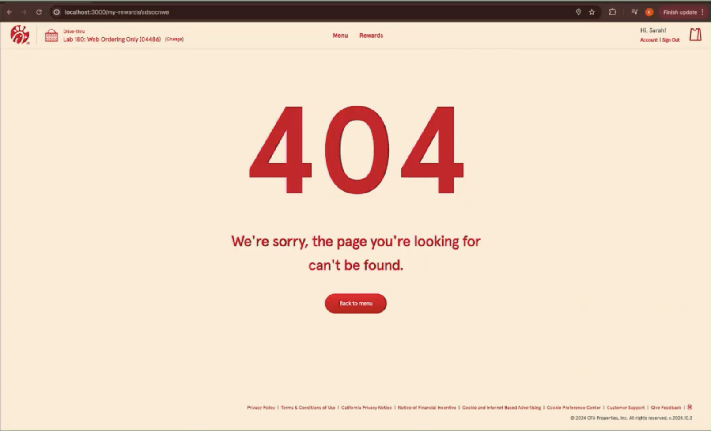
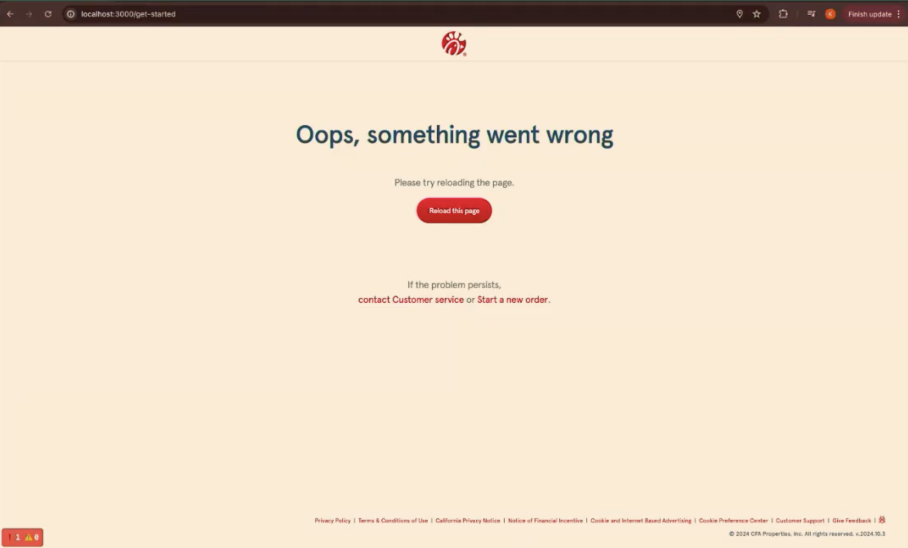
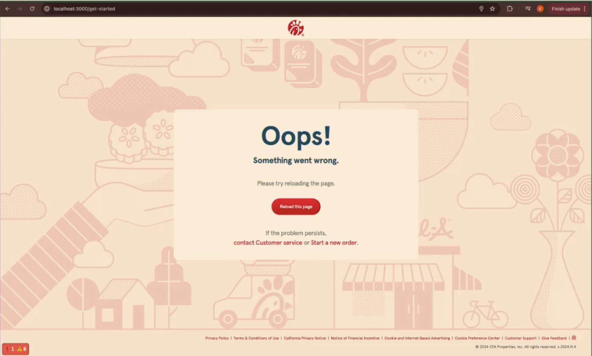
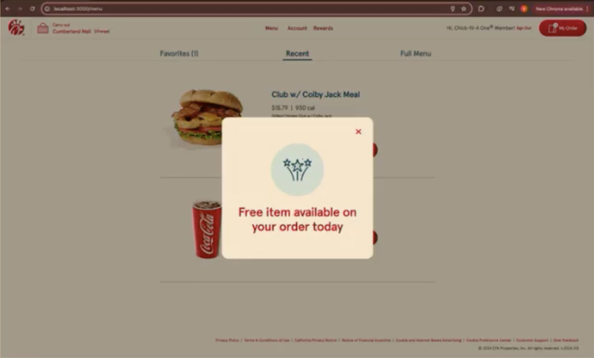
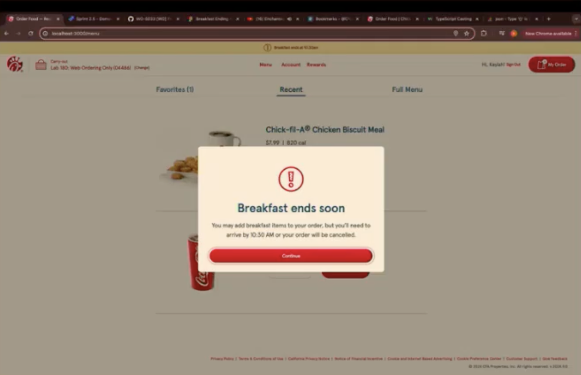
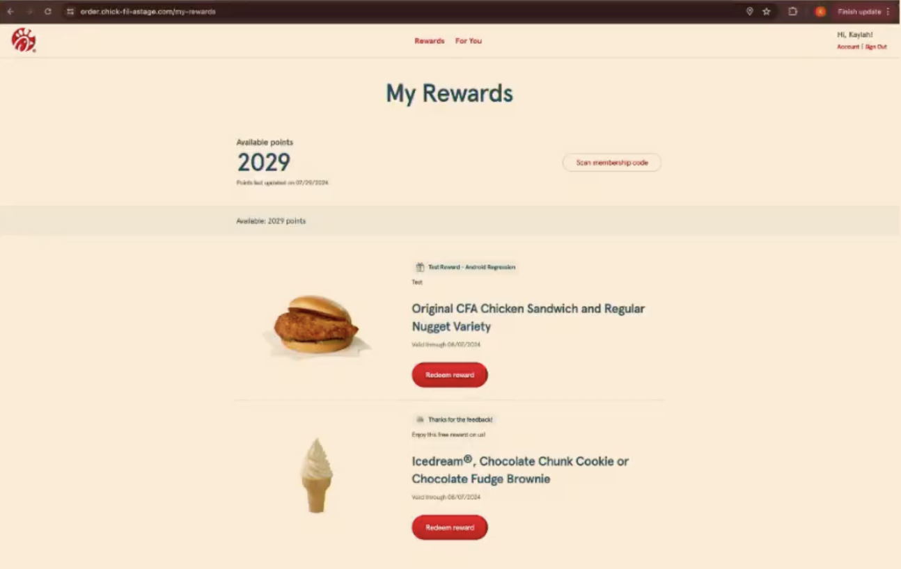

My web development work focuses on building engaging, user-centered front-end experiences with a strong emphasis on usability and visual clarity. During my time as a Front-end Software Engineer at Chick-fil-A, I worked on high-traffic user flows, promotional components, and error-state designs used by millions of users.
Below are examples of user-facing features I designed and implemented, combining UI/UX principles with production-ready React and TypeScript development.
I designed and developed branded animated error pages to improve the user experience when users encountered invalid links or system errors. This included a custom 404 error page for the Catering platform, designed to guide users back to relevant content while maintaining brand consistency.
These redesigns reduced bounce rates from invalid links and helped users recover more smoothly from navigation errors across devices.



I built promotional pop-up components used in online ordering flows to support marketing campaigns and time-sensitive incentives. These included messages such as “Breakfast Ending Soon” alerts and free-item promotional incentives.
Built with React and TypeScript, these components were optimized for performance and responsiveness, reaching millions of active users and contributing to measurable increases in campaign engagement.


I improved the layout and behavior of reward and incentive displays across devices to ensure all available items were visible to users. Previously, only the first reward in the list was shown, limiting user awareness of available incentives.
I redesigned the component to support horizontal scrolling, allowing users to browse through all rewards and promotional items seamlessly across screen sizes. This update improved discoverability, usability, and overall engagement with rewards content.
